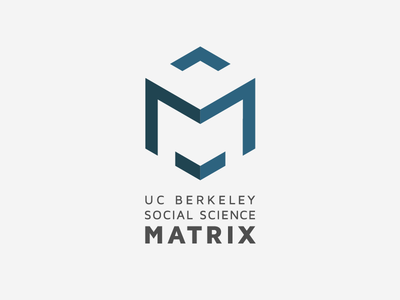

REGISTRATION INFORMATION
Registration PageDeadline to register is April 20th
LOCATION & TIME
Simons Institute Main Conference Room
4/25 Monday 9-5 PM
4/26 Tuesday 9-12 PM
INVITED SPEAKERS
PROGRAM COMMITTEE
Tom Griffiths
Jennifer Johnson-Hanks
Michael Jordan (Chair)
Chris Shannon
Jasjeet S. Sekhon
Laura Stoker
Bin Yu
SPONSORS

